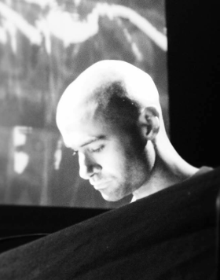
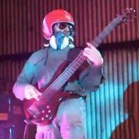

|
CSOUND.30
PAPER SESSION 2
Martin Crowley, James Kelly: Educational Tools for Live Sound Engineering Built Using Cabbage and Csound.
|
|

Live sound engineering is a resource-heavy topic to teach. Practical experience is essential, ideally in a professional performance venue. This can often be unfeasible due to factors such as expense and a lack of resources or training facilities. The three tools developed aim to give the learner an introduction to common live sound engineering tasks in a virtual learning environment, thus maximising time available in actual venues. A signal routing tool, a virtual “Room Tuner” (using impulse responses) and a feedback demonstration tool are presented.
Martin Crowley has been a student of Audio Production for several years. He has a background in radio production and djing, but his consuming passion is live electronic music performance. He is currently devising a technology enabled live performance installation for an 8 channel ambisonic speaker array with the help of 'Csound’ and ‘Pure Data’.
James Kelly holds a HND in Audio Production & Sound Engineering and is currently studying for a BA in Creative Music Production at IADT/STC Templebar. His Major Project focuses on developing software tools using csound and Cabbage.
|
Federico Russo: MIDI Controlled Audio Effects – Real-Time Reshaping of the Audio Signal.
|
|
Explanation of the general structure of the instrument
It is a MIDI controlled audio effect which is divided into 4 modules. Each module processes the audio signal in different ways, except for the audio input which is needed to get the source signal. The audio signal flows trough the modules thanks to a dry/wet system based on internal busses.
Explanation of each module of the instrument (code order)
-Module 1: audio input.
-Module 2: audio shift, warp and freeze, separated for spectral amplitudes and frequencies, controlled via MIDI. Implemented with an LFO controlled binaural movement.
-Module 3: audio resynthesis, using a vocoder-like structure, with selection of waveform to blend the incoming signal with.
Explanation of the workflow
The instrument was created module by module, testing the correct functionality each time a line of code was written. Creative use of references was applied, looking at the use that other developers had of opcodes in their instruments, to understand their functions and possible applications in the instrument.
Applications
The instrument finds its usefulness in cinematic sound effects for voices and non tonal based music, due to its random behaviour from the pvsfreeze opcode (the freeze of the frequencies is triggered by the keyboard).
Federico Russo began to study the electric bass when he was 13 under Andrea Grossi, enrolling in the courses of the Accademia Nova of Rome.
He also studied cello, with the concert performer and professor of the Istituto Superiore di Studi Musicali Gaetano Braga of Teramo Matteo Scarpelli.
During his studies, he also played, composed and arranged music with his band, Libra: the band played in some of the more important stages of the Roman scene, but also in other cities thanks to the promotional tour for the album Sottopelle (Volcan records), this landed the band on MTV new generation.
After that he started to study sound engineering at the Saint Louis college of music in Rome, where he founded with two colleagues the One Got Fat Collective for experimental electronic music and videos. In addition to that, during the sound engineering studies he met the experimental music composer Luca Spagnoletti, who introduced him to audio programming, specially the object programming of Max msp.
|
Shane Byrne: Csound as a Tool for Enabling Musicians.
|
|

This paper explores the use of Csound as a means for developing compositional and performance tools for musicians with complex disabilities. It discusses how Csound can be used to develop instruments that are designed specifically around the individual musician’s needs and tastes. This includes not only the design of software instruments but also the hardware interfaces that are used to interact with the software. This article will also address the methodologies employed when running Csound on embedded computing devices such as the Intel Galileo and provide a case study of a recent build that was completed on behalf of The Drake Music Project.
Shane Byrne is a composer of acoustic and electronic music and is currently a PhD researcher at Maynooth University focusing on interactivity and participation within electronic music composition. In 2013 he completed his BA in Music Technology with first class honours and in 2014 completed an MA in creative music technologies also receiving first class honours.
His current work is focused on physical computing and the potential for human interaction to add to an overall immersive musical experience for both the performer and the audience. His work has more recently led him to investigate the potential for such interaction to facilitate and encourage learning amongst the learning impaired and the autistic community.
He also works as a sound designer, foley artist and mixing engineer. His first love is performance and regularly takes part in improvisation nights and occasionally plays gigs with several noise and progressive rock bands in Dublin.
|
Thom McDonnell: Development of the Csound HRTF Opcodes to Allow use of Any Dataset, utilising the SOFA standard.
|
|
Binaural hearing allows humans determine the direction of sound, by detecting small differences between the signals hitting the ears. The differences at each ear are Inter-aural Time Differences (ITD) and Inter-aural Intensity Differences (IID), together forming the Head Related Transfer Function (HRTF). Both are frequency dependent, which is largely due to physiology; this implies a different frequency and phase profile for each direction in 360 degrees space around the head. As each listener's physiology differs, the HRTF varies between listeners. The Csound HRTF opcodes use the MIT dataset to create a well working generalised HRTF as a solution to the difficulty in acquiring fully personalised HRTFs. Several studies arrive at the conclusion that there is a degradation of localisation ability when non-individualised HRTFs are used, with “confusions” and reversals occurring more often. The ability to utilise any dataset (potentially a “hacked” individualised dataset) is desirable as it offers a more robust solution, allowing users to find a more closely matched dataset to improve immersion and localisation. The Audio Engineering Society (AES) has recently put forward a solution in defining a standardised spatial audio data file format (SOFA). This allows further development of the current opcodes, retaining backwards compatibility, and allowing users to audition and use any dataset. The current opcodes have proven robust; the algorithms for interpolation of HRTFs work well and are thus maintained in this development. The HRTF reverb opcodes could benefit from some tonal improvements based on an analysis of non-binaural industry standard products; this will also be addressed.
Thom McDonnell is a Dublin-based Producer and Lecturer. He specialises in teaching Music Technology, Synthesis, Studio Engineering, Audio Production and Electronics.
|
|